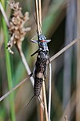

plecoptera

Has synonym(s): stoneflies
Definition: Plecoptera is an order of insects, commonly known as stoneflies. Some 3,500 species are described worldwide, with new species still being discovered. Stoneflies are found worldwide, except Antarctica. Stoneflies are believed to be one of the most primitive groups of Neoptera, with close relatives identified from the Carboniferous and Lower Permian geological periods, while true stoneflies are known from fossils only a bit younger. Their modern diversity, however, apparently is of Mesozoic origin.Plecoptera are found in both the Southern and Northern Hemispheres, and the populations are quite distinct, although the evolutionary evidence suggests species may have crossed the equator on a number of occasions before once again becoming geographically isolated.All species of Plecoptera are intolerant of water pollution, and their presence in a stream or still water is usually an indicator of good or excellent water quality.
Source: Wikipedia
Wikipedia Page (Something wrong with this association? Let us know.)
Wikidata Page (Something wrong with this association? Let us know.)